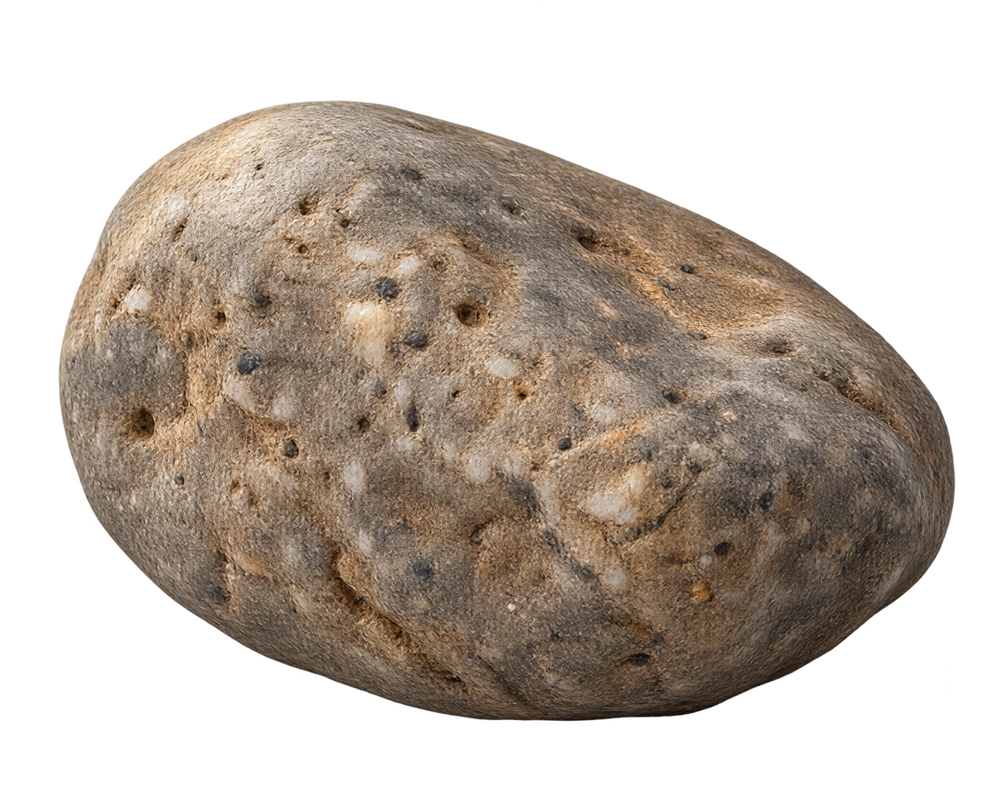

一塊石頭，怎麼知道它有多重、多大？
先分清楚要量的是質量還是體積，再把兩種量測結果放在一起，理解密度如何描述物體。
一塊石頭，光說長度夠嗎？
剛才我們用尺量鉛筆；現在讓同一塊不規則石頭在三把互相垂直的尺之間轉動，觀察長、寬、高三個方向的跨度。
石頭放在一個開口的三面量測框中：底部、後方與右側各有一把尺，沿左右、前後與上下三個方向量它的跨度。三面尺框固定不動；拖曳石頭可從各個方向觀察它，讀值會依石頭的擺向更新。
自由轉動石頭，觀察長、寬、高如何改變

正在準備立體模型…拖曳石頭觀察不同角度；滾輪或雙指縮放。
不規則石頭轉個方向，沿不同量測基準得到的長、寬、高就可能不同；每個數值都可能量得正確，卻不容易讓不同的人用同一組尺寸描述它。若要記錄和比較石頭，我們更想知道它的質量與體積：有多重、占多少空間。在相同方法和單位下，這兩項資訊能讓大家更一致地描述石頭，也更接近我們想了解的內容。接下來先量出質量與體積，再用兩者認識密度。
先回答：它有多重？
用兩種秤量方式找出同一塊石頭的質量，再比較不同單位如何表示同一個量。
選擇一種秤量方式
石頭沿用上一段的同一個立體模型；改變秤量器材，觀察各自如何得到讀值。
同一質量，不同單位表示
日常說「這顆石頭重幾公斤」通常是在說質量。這裡比較的是質量；物理上的重量是另一種物理量。
完成秤量後，再切換單位查看同一質量的不同表示。
再回答：它佔多少空間？
先用規則長方體看懂體積如何組成；下一段回到同一塊不規則石頭。
改變長、寬、高，觀察立體形狀
這是示範用的長方體，不是上一段的石頭。每個表面小格代表 1 cm 的邊長；單位小方塊以深淺交錯，方便看出增加的格數與層數。
一層一層加出體積
每一層厚 1 cm；底面的每個 1 cm × 1 cm 方格，疊上 1 cm 厚後就是一個 1 cm³ 小方塊。
每層有 2 × 3 = 6 個小方格；疊 4 層，共 24 個 1 cm³ 小方塊，也就是 24 cm³。
一個 1 cm × 1 cm × 1 cm 的小方塊容器，剛好可以裝 1 mL 的水。
回到原來那顆石頭：長方體每個方向都有清楚的邊長，可以相乘；石頭的外形不規則，下一段改用量筒的水位差量出它佔的空間。
石頭形狀不規則，體積怎麼量？
把同一塊石頭完全放入量筒；水位上升的體積，就是石頭排開的水量。
讓石頭進入量筒，觀察水位
拖曳石頭進入量筒，讓它完全浸入水中；也可使用下方按鈕。
從水位差量出石頭體積
水位差法的適用情況
同樣佔 15 cm³，為什麼質量差這麼多？
用同一支量筒比較石頭和純金模型：它們排開的水一樣多，質量卻不同。
選一個樣本，先讀取它的質量，再把它完全放進量筒。兩次水位差若相同，表示樣本體積相同；接著比較質量。
選擇樣本，放入水中
拖曳樣本進入量筒；量測後可再拖出。也可用下方按鈕操作。
把兩次量測結果並排
| 樣本 | 質量 | 水位差＝體積 |
|---|---|---|
| 石頭模型 | 39 g | 尚未量出 |
| 純金模型 | 約 289.5 g | 尚未量出 |
同樣排開 15 mL 的水，表示兩個樣本都佔 15 cm³；但純金模型的質量大得多。下一段用「每 1 cm³ 有多少質量」來比較它們。
純金模型採用約 19.3 g/cm³ 的參考密度；15 cm³ × 19.3 g/cm³ ≈ 289.5 g。石頭的 39 g、15 cm³ 是本課示範模型資料，不代表所有石頭。
每一立方公分裡，裝了多少質量？
密度就是單位體積的質量；用質量除以體積，把第五段的比較寫成數值。
石頭模型
每 1 cm³ 石頭模型的質量是 2.6 g。
純金模型
每 1 cm³ 純金的質量約 19.3 g；此處使用純金的參考密度作模型數據。
兩個樣本體積相同，純金模型的質量較大，因此每 1 cm³ 所含的質量也較大，密度較大。若體積用 mL 表示，因 1 cm³ = 1 mL，密度數值相同，但單位寫作 g/mL。
同一種材料，變大之後密度也會變嗎？
同一均勻材料放大時，質量和體積一起增加；密度仍描述材料本身。
放大同一種材料樣本
同種、均勻材料的模型；整體等比例放大，因此體積加倍時，外形線性尺寸約放大 1.26 倍。
質量與體積按相同比例增加
15 cm³、39 g 與 30 cm³、78 g 的密度都為 2.6 g/cm³。樣本變大，質量和體積同時增加，密度不因此改變。
用質量和體積說明差異
回看同體積的石頭和純金模型，用密度說明它們的質量差異。
石頭模型和純金模型的體積都是 15 cm³。哪一個密度較大？選一個答案，再查看資料說明。
| 樣本 | 質量 | 體積 | 密度 |
|---|---|---|---|
| 石頭模型 | 39 g | 15 cm³ | 2.6 g/cm³ |
| 純金模型 | 約 289.5 g | 15 cm³ | 約 19.3 g/cm³ |